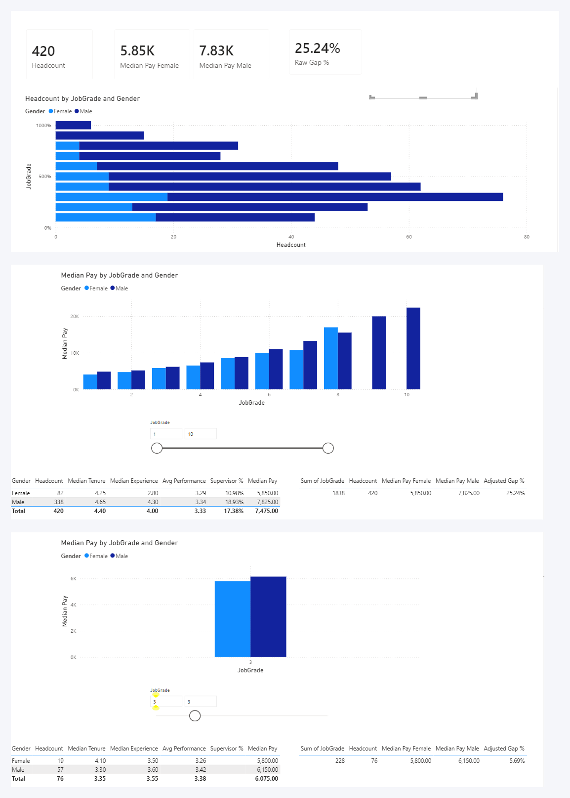

بدأت هذا المشروع بسؤال واحد: لو طلع لدينا فرق في متوسط رواتب الرجال والنساء، هل هذا دليل على تمييز؟ الإجابة أعقد من نعم أو لا، وهذا التحليل يشرح كيف نفكّك الرقم بدل ما نأخذه كما هو.
تحليل عدالة الأجور من أكثر الملفات اللي يُساء استخدام الأرقام فيها. تطلع مؤسسة بخبر أن الفجوة عندها 20%، ويقرأها البعض كإثبات تمييز، بينما تكون في الحقيقة انعكاساً لتوزيع الموظفين على الدرجات الوظيفية. والعكس صحيح: مؤسسة تعلن أن الفجوة عندها 2% وتتجاهل أن نساءها كلهن في أسفل السلّم.
اللي يهمني كأخصائية موارد بشرية أن أفرّق بين الحالتين، لأن كل واحدة منهما لها علاج مختلف تماماً. بنيت المشروع على بيانات تركيبية صُمّمت لتشبه هيكل شركة مقاولات سعودية، وفيها فجوة مخبأة عمداً، عشان أختبر إذا كانت المنهجية قادرة على كشفها.
البيانات في هذا المشروع تركيبية بالكامل. وُلّدت لأغراض التعلّم ولا تخص أي جهة أو موظفين حقيقيين. المنهجية وحدها هي القابلة للنقل على بيانات فعلية.
خمس مراحل، كل وحدة تجاوب على سؤال قبل ما ننتقل للي بعده.
حذف السجلات المكررة بالرقم الوظيفي، وتوحيد قيم الجنس والأقسام. كان في قسم مكتوب بصيغتين بسبب مسافة زائدة في نهاية النص، وخمسة سجلات مختصرة في عمود الجنس.
التفسير: Power BI ما يعطيك رسالة خطأ لو تكرر مسمى بصيغتين — يتعامل معها كفئتين مستقلتين ويطلّع لك رقماً يبدو منطقياً وهو خاطئ. أول محاولة لحساب الفجوة عندي طلعت 25.88% بسبب خمسة سجلات ساقطة.
بنيت عمود Basic FTE
يقسم الراتب على نسبة دوام الموظف.
التفسير: موظف الدوام الجزئي راتبه أقل لأنه يشتغل ساعات أقل، مو لأن في ظلم. بدون هذا التعديل يدخل فرق الساعات في حساب الفجوة ويشوّهها.
قارنت وسيط أجر النساء بوسيط أجر الرجال على مستوى الشركة كاملة.
التفسير: المتوسط يتأثر بعدد قليل من الرواتب المرتفعة جداً. في هذه البيانات كل شاغلي الدرجتين العليا رجال، فالمتوسط كان بيضخّم الفجوة بسبب ستة أشخاص لا بسبب الوضع العام.
قبل ما أسمّي أي فرق "غير مبرر"، قست أربعة عوامل تفسّر عادةً اختلاف الأجور بين موظفَين في نفس الدرجة: مدة الخدمة، الخبرة السابقة، تقييم الأداء، والدور الإشرافي.
التفسير: بدون هذه الخطوة يكون التحليل اتهاماً لا تحليلاً. ولو ظهر أن العوامل تفسّر الفجوة، فالنتيجة نتيجة صحيحة تستحق أن تُقال.
كررت المقارنة داخل كل درجة وظيفية على حدة، بحيث ما أقارن إلا أشخاصاً في نفس المستوى.
التفسير: هنا يظهر الفرق بين مشكلة في أجر الوظيفة الواحدة ومشكلة في توزيع الوظائف. وهذا الفرق هو ما يحدد التوصية.
| الدرجة | عدد النساء | عدد الرجال | وسيط أجر النساء | وسيط أجر الرجال | الفجوة |
|---|---|---|---|---|---|
| 1 | 17 | 27 | 4,050 | 4,833 | 16.21% |
| 2 | 13 | 40 | 4,700 | 5,158 | 8.89% |
| 3 | 19 | 57 | 5,800 | 6,150 | 5.69% |
| 4 | 9 | 53 | 6,500 | 7,350 | 11.56% |
| 5 | 9 | 48 | 8,500 | 8,800 | 3.41% |
| 6 | 7 | 41 | 9,950 | 10,950 | 9.13% |
| 7 | 4 | 24 | 10,725 | 13,225 | 18.90% |
| 8 | 4 | 27 | 16,950 | 15,500 | −9.35% |
| 9 | 0 | 15 | — | 19,950 | — |
| 10 | 0 | 6 | — | 22,342 | — |
الأجور بالريال السعودي على أساس الدوام الكامل. الدرجات 7 و 8 فيها أربع موظفات فقط، فأرقامها أقل استقراراً من غيرها ولا تصلح لبناء قرار عليها وحدها.

الفجوة الخام 25.24%، لكنها تنكمش إلى ما بين 3% و 19% لما نقارن داخل نفس الدرجة. هذا يعني أن الجزء الأكبر منها ناتج عن مكان النساء في الهيكل الوظيفي، لا عن الأجر المقرّر للوظيفة الواحدة.
نسبة النساء تنخفض بشكل مطّرد كلما ارتفعت الدرجة: 60% في الدرجات الدنيا، 10% في الدرجتين 7 و 8، وصفر في الدرجتين 9 و 10.
العوامل الأربعة لم تفسّر إلا جزءاً محدوداً. أوضح مثال في الدرجة الثالثة: النساء هناك أقدم في الشركة (4.1 سنة مقابل 3.3)، وبخبرة سابقة متطابقة تقريباً، ولا أحد من الطرفين في دور إشرافي — ومع ذلك وسيط أجرهن أقل بنسبة 5.69%.
اللوحة الأصلية مبنية في Power BI على مقاييس DAX تعيد الحساب مع كل فلتر. أعدت بناء مخرجاتها هنا لتتصفّحها مباشرة: اختر درجة وظيفية وشوف تركيبتها والعوامل المفسّرة فيها.
اضغط على أي درجة لتغيير العرض
كل شريط يمثل درجة وظيفية، وعرض الجزء الملوّن هو نسبة كل جنس فيها.
تنخفض نسبة النساء من 39% في الدرجة الأولى إلى صفر في الدرجتين التاسعة والعاشرة.
الدرجات 1 و 4 و 7 تستحق فحص ملفات أفرادها: تاريخ الالتحاق، الراتب الابتدائي، وسجل الزيادات. الرقم الإجمالي يحدد أين ننظر، والملف الفردي هو اللي يفسّر.
غياب النساء عن الدرجتين العليا لا يُعالَج بزيادة رواتب. يُعالَج بمراجعة معايير الترشيح للأدوار الإشرافية ومن يُدعى إليها.
الفجوة موجودة في الدرجات الدنيا حيث الخبرة السابقة قريبة من الصفر للطرفين، وهو ما يوجّه الشك نحو نقطة الدخول لا نحو الزيادات اللاحقة.
أكثر شيء لفتني أن الخطأ الوحيد اللي كاد يفسد النتيجة كان خطأ إملائياً في خمس خلايا. البرنامج ما اعترض، وأعطاني رقماً معقولاً تماماً — 25.88% بدل 25.24%. لو ما دققت في مصدر الفرق، كان التقرير راح يطلع بأرقام خاطئة وهو يبدو سليماً.
والدرس الثاني أن الرقم الواحد نادراً ما يكون الإجابة. "الفجوة 25%" جملة صحيحة إحصائياً ومضللة إدارياً، لأنها تدفع لعلاج خاطئ. تفكيكها هو اللي يحوّل التحليل من خبر إلى قرار.